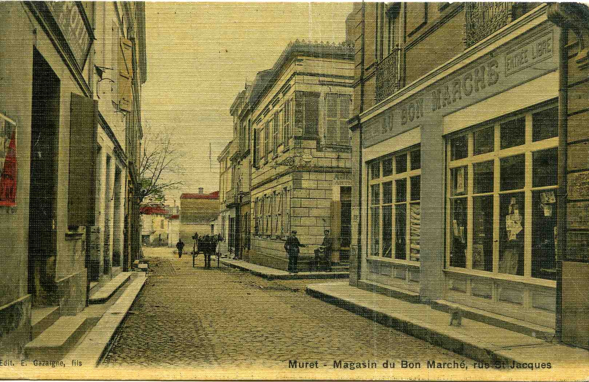
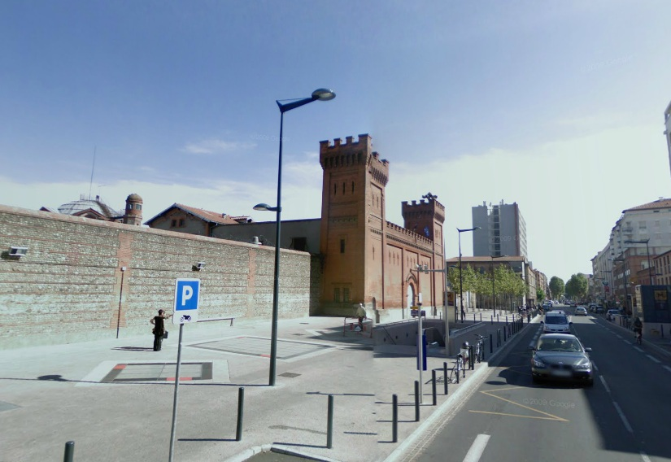
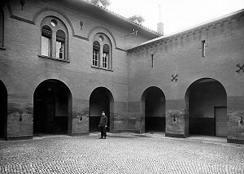
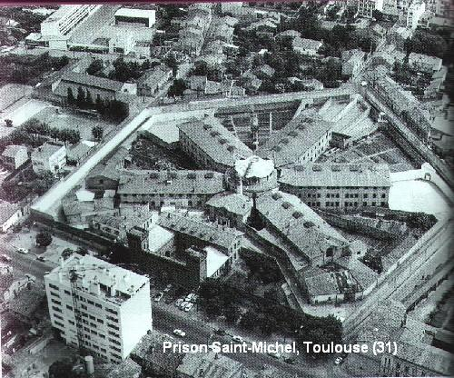
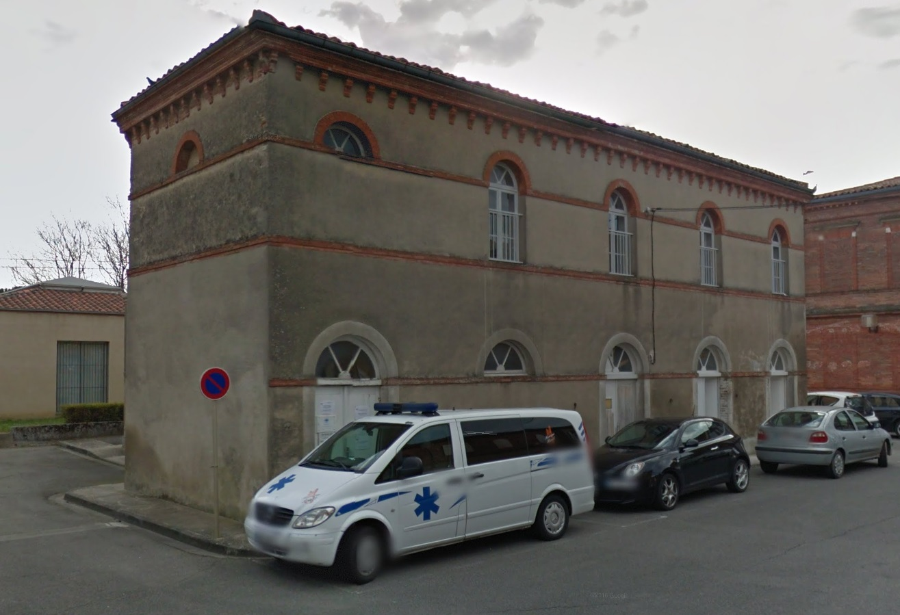
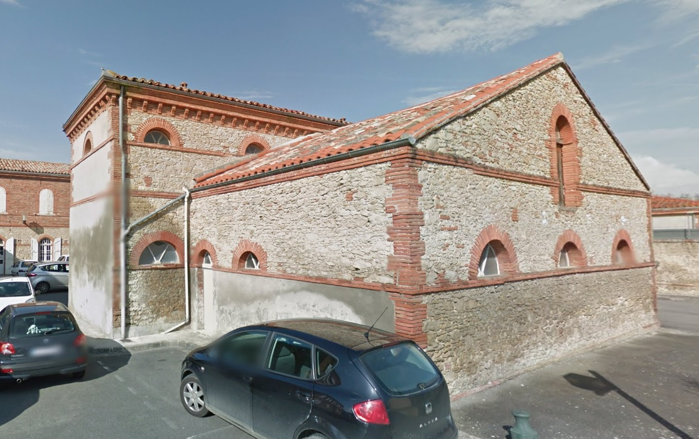

| Département | Images | Ville | Nom | Adresse | Période | Capacité | Histoire du lieu | Nombre d'exécutions |
| Haute-Garonne (31) |  |
Muret | Maison d'arrêt | Place de la Halle aux Volailles | 1623-1926 | La vie de la prison de Muret n'a cessé d'être un va-et-vient. Construite en 1623, reconstruite au bout de 109 ans, elle est finalement démolie, puis reconstruite une dernière fois vers 1880. Sur un terrain triangulaire dont la base donne sur la place de l'Église (place de la République), elle consiste en des bâtiments sombres et peu salubres derrière de hauts murs qui inspirent la crainte. Non loin de là, dans la rue Clément Ader, le tribunal partage ses murs avec la sous-préfecture. On songe à déplacer la prison du centre-ville en 1909, mais le projet est abandonné au bout de trois ans. Ce n'est qu'une question d'années, car la loi de 1926 marque la fin définitive de la vieille geôle, et les bâtiments sont rasés entre 1927 et 1928. A sa place, en 1955, de nouvelles halles de béton furent construites, oeuvres de Jean Montier, et dont la coupole centrale offre un écho formidable que je vous incite à aller découvrir un jour... Muret ne devait pas en avoir fini avec la vie carcérale, car c'est sur son territoire, mais loin de la ville, qu'on édifia la centrale (désormais centre de détention) dans les années 60, avant d'y adjoindre, accolée mais dépendant de la ville voisine, Seysses, une maison d'arrêt flambant neuve en 2003. Sur la photo, on distingue au fond le mur de la prison, côté place de l'Église : merci à Monsieur Christophe Marquez, directeur du musée Clément Ader, pour cette carte postale ! | Aucune exécution | |
| Haute-Garonne (31) | Saint-Gaudens | Maison d'arrêt | Rue Pierre Angot | 1821-1895 | 82 places | En 1808, un décret précise que l'ancienne prison Sainte-Catherine (18, rue Thiers) doit être fermée. L'ancien couvent de la Confrérie, acheté en 1800, sera la nouvelle maison d'arrêt, mais il faut six ans avant que les travaux ne commencent, et sept ans de plus avant qu'ils ne soit achevés : terminée en février 1821, la prison devient opérationnelle - car payée jusqu'au dernier sou - le 16 avril suivant. Voisine de la gendarmerie, la prison est un bâtiment de trois étages, long de 27 mètres et large de 9, parcouru au nord par les couloirs d'accès. Le rez-de-chaussée accueille les cachots et deux cellules de 70 m² - dont l'une est destinée aux militaires -, le premier étage est le quartier des femmes, le second celui destiné aux contrebandiers, le troisième comporte l'infirmerie et les cellules des notables et des détenus pour dettes. La seule exécution du XXe siècle à Saint-Gaudens aura lieu sur la place à proximité de l'ancienne prison, mais celle-ci était fermée depuis cinq ans. Après sa démolition, on y bâtit la Caisse d'Épargne - qui s'y trouve encore. | Aucune exécution | |
| Haute-Garonne (31) | Saint-Gaudens | Maison d'arrêt | Avenue de Saint-Plancard | 1895-194? | Maison d'arrêt cellulaire (20 ou 21 cellules) | Aucune exécution | ||
| Haute-Garonne (31) | Toulouse | Maison d'arrêt, de justice et de correction | Allées Jules-Guesde | 1827-1872 | Bâtiment en forme de triangle situé à l'angle de la place du Parlement et des allées Jules-Guesde. Cependant, la configuration des lieux finit par poser problème, et en 1856, la décision est prise de construire une nouvelle maison d'arrêt. | Aucune exécution | ||
| Haute-Garonne (31) |    |
Toulouse | Maison d'arrêt, de justice et de correction | 18 bis, grande rue Saint-Michel | 1872-2009 | 288 places (1962) | La prison Jules-Guesde, trop petite et malcommode, ne répondant plus aux volontés carcérales de l'époque, on décide de l'édification d'une nouvelle prison, le long de la rue Saint-Michel, sur un terrain pentagonal de 19400 m². La maison d'arrêt sera bien plus vaste, en forme d'étoile à cinq branches, l'architecte Esquié s'inspirant de la conception panoptique de Jérémy Bentham, alors en vogue outre-Atlantique ; les travaux durent de 1862 à 1869, et pendant la guerre, les lieux servent d'hôpital de fortune. Ce n'est qu'en 1872 que les premiers détenus arrivent dans la prison, pénétrant par une façade en briques rouges, rappelant un château fort, dressée pour inspirer la peur au passant - et pendant qu'on loge les gendarmes dans les locaux désaffectés de la précédente prison. L'aile centrale, pointant vers l'Est, est réservée aux prisonniers les plus dangereux, dont les condamnés à mort. C'est à compter de 1913 que ces derniers, jusqu'alors guillotinés sur la place du Port-Garaud, en bord de Garonne, sont exécutés devant la porte principale. Trois têtes tomberont de façon publique, puis encore trois en privé, dont celle en 1943 du résistant Marcel Langer. Progressivement insalubre, la prison est désaffectée le 26 janvier 2003 et ses 528 prisonniers transférés à la nouvelle maison d'arrêt départementale, construite à Seysses en banlieue. Elle accueille encore pour un temps les condamnés en semi-liberté, ceux-ci rejoignant Seysses à leur tour en octobre 2009. Le bâtiment, en partie inscrit monument historique le 25 février 2011, devrait à terme être détruit en partie, conservant le portail d'entrée, mais actuellement - novembre 2013 - aucun projet n'est vraiment établi pour l'avenir de ces bâtiments. | Six exécutions en 1913, 1923, 1943 et 1948. |
| Haute-Garonne (31) |   |
Villefranche-de-Lauragais | Maison d'arrêt | Place de l'ancienne sous-préfecture | -1926 | Comme beaucoup de sous-préfectures, Villefranche eut droit sous le XIXe siècle à sa "cité judiciaire", située au nord-ouest de la ville sur la route de Toulouse (rue de la République). Le long de la route, se trouvaient donc successivement la sous-préfecture, la gendarmerie et le palais de justice, et derrière la gendarmerie, un peu en retrait, une minuscule prison. Tous les bâtiments sont toujours debout (sauf la muraille qui entourait autrefois la maison d'arrêt - on devine cependant, dans le mur du palais de justice, une porte dérobée qui devait servir de passage rapide entre prison et salle d'audience), et de pôle judiciaire, sont devenus parties d'un pôle social (Restos du Coeur à la gendarmerie, Croix Rouge au tribunal, etc). La prison a visiblement un rôle d'offices municipaux, et la sous-préfecture est désormais... la MJC. | Aucune exécution |
{kind=link}
{kind=link}
{kind=link}
{kind=link}
{kind=link}
{kind=link}